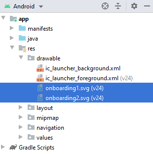

El objetivo de esta práctica es trabajar con Fragments.
Un Fragment representa un comportamiento o una parte de la interfaz de usuario en una Activity.
Puedes combinar múltiples fragmentos en una sola actividad para crear una IU multipanel y volver a usar un fragmento en múltiples actividades. Puedes pensar en un fragmento como una sección modular de una actividad que tiene su ciclo de vida propio, recibe sus propios eventos de entrada y que puedes agregar o quitar mientras la actividad se esté ejecutando (algo así como una "subactividad" que puedes volver a usar en diferentes actividades).
Overview of Navigation
The Navigation Component consists of three key parts, working together in harmony. They are:
- Navigation Graph (New XML resource) - This is a resource that contains all navigation-related information in one centralized location. This includes all the places in your app, known as destinations, and possible paths a user could take through your app.
- NavHostFragment (Layout XML view) - This is a special widget you add to your layout. It displays different destinations from your Navigation Graph.
- NavController (Kotlin/Java object) - This is an object that keeps track of the current position within the navigation graph. It orchestrates swapping destination content in the NavHostFragment as you move through a navigation graph.
When you navigate, you'll use the NavController object, telling it where you want to go or what path you want to take in your Navigation Graph. The NavController will then show the appropriate destination in the NavHostFragment.
CODE: https://github.com/gerardfp/P9/


Selecciona "Empty Activity" como plantilla para la MainActivity
Añade las dependencias para incluir el soporte Navigation:
dependencies {
def nav_version = "2.1.0"
implementation "androidx.navigation:navigation-fragment:$nav_version"
implementation "androidx.navigation:navigation-ui:$nav_version"
}Añade 3 destinos al grafo de navegación

Añade los fragments al grafo de navegación
Abre el fichero res/navigation/nav_graph.xml en modo  , y haz click sobre el icono "New Destination"
, y haz click sobre el icono "New Destination" 

Haz click en "Create new destination"

Seleciona "Fragment (Blank)" como plantilla para el Fragment:

Introduce el nombre Onboarding1Fragment:

Repite el proceso para crear otro fragment Onboarding2Fragment y HomeFragment
Por defecto, el layout de los fragments creados contiene un FrameLayout. Este layout está pensado para contener un único child. Cambiémoslo por un ConstraintLayout:
Abre el fichero res/layout/fragment_onboarding1.xml en modo "Code" y sustituye el FrameLayout por un ConstraintLayout:

Añade las imágenes
Encima del directorio app, haz click-derecho y selecciona New > Vector Asset



En el layout de la MainActivity (activity_main.xml) añade el <fragment> NavHost:
<?xml version="1.0" encoding="utf-8"?>
<androidx.constraintlayout.widget.ConstraintLayout
xmlns:android="http://schemas.android.com/apk/res/android"
xmlns:app="http://schemas.android.com/apk/res-auto"
android:layout_width="match_parent"
android:layout_height="match_parent">
<fragment
android:id="@+id/nav_host_fragment"
android:name="androidx.navigation.fragment.NavHostFragment"
android:layout_width="0dp"
android:layout_height="0dp"
app:layout_constraintLeft_toLeftOf="parent"
app:layout_constraintRight_toRightOf="parent"
app:layout_constraintTop_toTopOf="parent"
app:layout_constraintBottom_toBottomOf="parent"
app:defaultNavHost="true"
app:navGraph="@navigation/nav_graph" />
</androidx.constraintlayout.widget.ConstraintLayout>